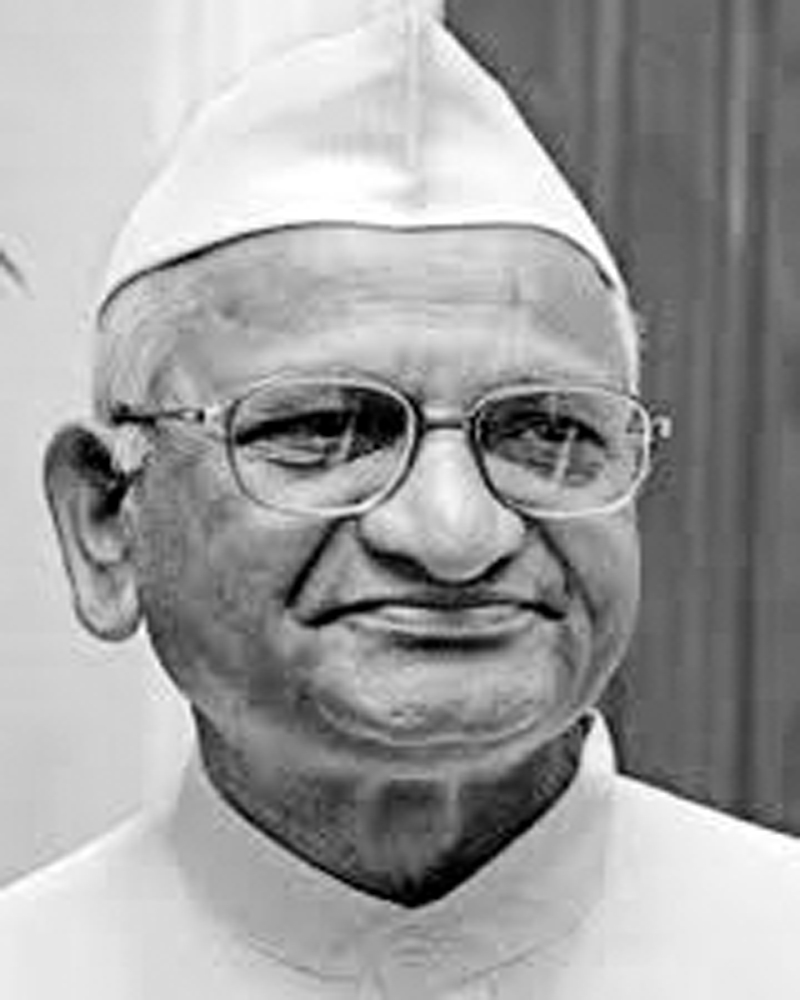

August protests
On July 18, 2011, Hazare declared that he had written a letter to the Prime Minister about his decision to go on an indefinite fast from 16 August at Jantar Mantar. Hazare said that it was the right of Indian citizens to protest and the government could not crush their movement, unlike the Ramlila ground protests. Hazare declared that he was ready to get arrested and beaten up and informed the Delhi Police about his protest.
Hazare's crusade for a strong Lokpal Bill found support in Mumbai as the Mumbai Taximen's Union, comprising over 30,000 taxis, agreed to extend their support to Hazare's cause on 16 August. The union's decision came after a meeting with Hazare's team in Mumbai. The union's proposal was to keep all taxis off the roads or ply less taxis on August 16. The Mumbai chapter of India Against Corruption claimed that till 26 July, nearly 44,000 people had shown interest in joining the protest from August 16.
In Allahabad, the legal community expressed their support of Hazare's campaign against corruption. Lawyers of Allahabad High Court held protests in support of Anna Hazare at Allahabad by burning copies of the Lokpal Bill, blocking roads and shouting slogans against the callousness of the government. They also pledged to go on a hunger strike at Allahabad from August 16 in support of Anna Hazare.[108]
The Vishwa Hindu Parishad also came out in support of Hazare's movement, saying that for a strong Lokpal Bill, people from across the country should support his campaign.
In a poll conducted by India Against Corruption in Karnataka, about 94.3% of Chikkaballapur constituency and 79.7% of Bangalore South wanted to bring the prime minister under the ambit of the Jan Lokpal Bill. The results showed that a majority of the population wanted the Jan Lokpal Bill to be passed by the Parliament and not the "watered down, toothless" bill drafted by the government. The 6,000 participants at the referendum also said that being representatives of the people, members of parliament should vote for the Lokpal, not as directed by their parties, but as by the voice of the majority in his/her constituency. The participants also voted to bring judges under the Lokpal, give adequate powers to the Lokpal to dismiss officers guilty of corruption, monitor corruption at the central as well as state level through Lokayuktas, and to bring all levels of officers under the bill. The questionnaire had a set of eight questions that brought out crucial differences between the Jan Lokpal Bill and the Lokpal Bill put forth by the government, and asked for the people's vote on the same. Around ten parliamentary constituencies across the nation conducted a similar exercise and the results from the nation-wide campaign will be consolidated and presented to the members of Parliament in time for the monsoon session. On the morning of 16 August 2011, Hazare, along with close associates, was remanded to judicial custody for seven days. Hazare was picked up by police at about 7.30 am from a residence in east Delhi for "intending to defy prohibitory orders". Late afternoon, he was produced before a special executive magistrate. After he refused to sign a personal bond to be allowed to get out on bail he was remanded in judicial custody for seven days. Within hours of his detention, a spokesperson for Team Anna said that he had begun his hunger protest while in police custody and that he was not accepting even water to drink. The arrest of Hazare and some of his close associates, set off a groundswell of protests across the country and this appeared to be spreading quickly. The arrest was condemned by political parties, the chief ministers of some non-Congress ruled states, non-government organizations and even parliament did not transact any business after an uproar on the issue forced an adjournment for the day.
India Against Corruption protestors in New Delhi.
As protests built up in several cities and towns over the arrest, Prashant Bhushan, one of Hazare's key associates, announced a march from India Gate to Parliament House on Wednesday to protest against the police action, which he said was taken at the behest of some cabinet ministers. Delhi police commissioner BK Gupta said that the police were not keen for Hazare be sent to judicial custody. He said police were prepared to release him on a personal bond if he would have given an undertaking that he would not defy Section 144 of the Criminal Procedure Code which prohibits the gathering of five or more people and ask his supporters not to do so also. Hazare was taken to the Tihar jail where he will spend the time in judicial custody. Kiran Bedi, Arvind Kejriwal, Kumar Vishwas and Manish Sisodia, three other leading activists of Team Anna, have also been sent to judicial custody on similar grounds. In a message released after his detention, Hazare said this was the beginning of the "second freedom struggle" and he called on people to participate in a "jail bharo" agitation.
Opposition parties, peeved over the attitude of the Congress in parliament, said they would meet later today to decide on the course of action.[when?] Communist Party of India leader Gurudas Dasgupta said he had proposed a boycott of parliament for three days. Communist Party of India (Marxist) leader Brinda Karat described the arrest as "a strong attack on democratic rights". Hours after arrest of Hazare, Leader of Opposition in Lok Sabha and BJP leader Sushma Swaraj strongly condemned the action and demanded and explanation from Prime Minister, Manmohan Singh saying that the government is hell-bent on crushing the civil rights of the citizens. Senior Bhartiya Janata Party leader L K Advani said he was not surprised at the detention of Mr Hazare and he charged the government with looking for scapegoats and stopping peaceful protests instead of fighting corruption. Arun Jaitley, leader of the opposition in the Rajya Sabha, said, that it was a very sad day for Indian democracy, where the ruling government took away the right to protest and the right to dissent.
In Patna, Bihar chief minister Nitish Kumar described the detention of Hazare and his associates as a "rehearsal of emergency" which people will never tolerate, and "a murder of democracy." Punjab chief minister Prakash Singh Badal also condemned the arrests saying that the Congress has panicked over the movement of Anna Hazare and accused Congress leaders of stashing money abroad. In Chandigarh and Ludhiana, people from all walks of life took to the streets - despite inclement weather - to join the protest for a strong Lokpal. Among them were activists of the NGOs 'India Against Corruption' and 'Awaaz' who launched a relay hunger strike. Traffic was also blocked at several intersections. Slamming the Centre for detaining Anna Hazare and his aides, Bihar Deputy Chief Minister SK Modi today called upon the people to come to the streets to hold demonstration in support of Hazare's movement against corruption "peacefully and democratically."
In Hyderabad, Telugu Desam Party president N. Chandrababu Naidu asked the Prime minister Manmohan Singh to apologize to the nation for having sent Hazare and other social activists, who are fighting against corruption, to Tihar jail. In Maharashtra, crowds gathered in many cities and towns in response to Mr Hazare's call to court arrest. Thousands poured into south Mumbai's Azad Maidan since early in the morning, in preparation for the 'Jail Bharo' programme. A large number of people courted arrest in support of the demand for an effective Lokpal. Many people wearing 'Gandhi' caps with slogans 'I am Anna' gathered at the Reserve Bank of India Square, on the busy Nagpur-Jabalpur national highway that runs through the Civil Lines area.
In a broad day light murder at Bhopal, capital of Madhya Pradesh, an RTI activist and a strong supporter of Anna Hazare's anti-corruption movement, Shehla Masood was shot dead around 11.30 am on August 16. An unidentified assailant shot her dead from point blank range while she was leaving in her car to attend a demonstration in support of Anna Hazare.
In Delhi, in protest against the arrest of Anna Hazare and his close aides by the Delhi Police, the members of All India Students Association showed black flags and shouted anti-government slogan against Kapil Sibal, who was to address a seminar at Malvankar Hall in city.
Hazare on August 16 asked government employees across the country to go on mass leave to show solidarity with the movement. Union Home minister P. Chidambaram hoped they would not respond, describing the call as "completely wrong." Hazare's close associate and lawyer Prashant Bhushan urged government servants to join their cause and take a mass leave for a day and join the protests in their city.
Hazare's release After protests all over India, the Delhi Police decided to release Hazare after he had been sent to Tihar Jail for seven days. Hazare had even refused food and water intake in Tihar jail, indicating he would carry on his fast in jail. Hazare and his aides, including Kiran Bedi and Arvind Kejriwal, were first taken to the Delhi Police Officer's Mess in North Delhi and were shifted to another after Hazare's supporters gathered in large numbers at Civil Lines. The Delhi Police sent a warrant to the Tihar Jail for the release of Hazare and his supporters withdrawing bail bond conditions, which Hazare had earlier refused to sign. Over 1,500 people who have been detained for taking part in protests demanding Hazare's release were released. Congress sources said that the Government decided to release Hazare and his supporters after coming to the conclusion that keeping him in jail would disrupt law and order unnecessarily. The decision to release Hazare was made after Prime Minister Manmohan Singh met party General Secretary Rahul Gandhi, who disapproved of the arrest, on the evening of August 16. Hazare supporters Kiran Bedi and Shanti Bhushan were released by the Delhi Police early on August 16. However, on release, Anna Hazare refused to leave Tihar jail until the government agreed to give unconditional permission to hold protests at JP Park.
Anna Hazare agreed to leave jail after Delhi Police granted him permission to fast for 15 days against corruption at Ramlila Maidan, a larger venue than JP Park. However, he had to spend another night in jail as the venue was not ready. On 19 August, at around 12noon IST, Anna left Tihar jail after 3 days. Supporters welcomed him with spontaneous roar as he headed towards Delhi's Ramlila Maidan to launch his hunger protest.
Hazare's arrest